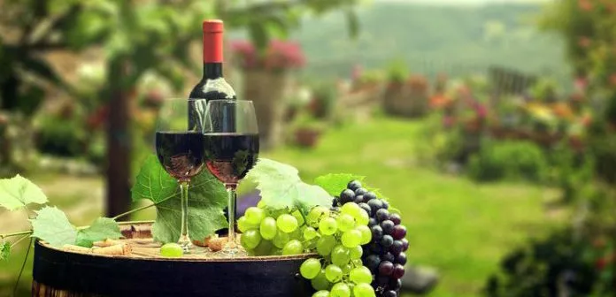

The Sangiovese grape is famously known to originate from Tuscany however, many other regions in Italy grow this grape, including Umbria, which borders Tuscany in Central Italy, Southern Italy in Campania, and Sangiovese di Romagna.
In the more northern Italian regions, the wines have less body and high acidity, which is why they are sometimes blended with other red grapes to produce other characteristics.
In the more southern regions of Italy, the grapes tend to have better-growing conditions for this variety, particularly in the DOCG regions of Montepulciano and Montalcino, where the famous Brunello wines are made using 100% Sangiovese grape.
Although grown in Italy for generations, with its quality varying over the years, it was in the 1980s that improved winemaking techniques helped to produce a better-quality grape for Sangiovese wines.
By the 21st Century, Sangiovese was produced in one in every ten vineyards within Italy. Sangiovese is known for its firm tannins, acid structure, dark cherry aromas, and savoury characters.
Sangiovese is a red wine grape that can adapt and flourish in many different growing environments. Due to its versatility, Sangiovese is one of the most diverse grape varieties used in winemaking. Wines made with Sangiovese grapes can vary in taste, based on terroir, climate, and process.
Sangiovese wines are usually dry, medium to full-bodied and highly acidic, with fruity and savoury flavours. Sangiovese grapes produce wines with more earthy and savoury flavours than most other red wines.
You'll taste notable aromas of fig and cherry, followed by a flavour profile of cranberry, sour cherry and red plum, with subtle notes of tomato and roasted pepper.
Light soaking of Sangiovese is becoming increasingly popular and creates a richer, plumper flavour, as well as hints of leather, coffee, spice and smoky flavours.
The commonly known Sangiovese-based wines have a balance between their fruity and earthy flavours. Fruity Flavours include: Tart Cherry, Red Plum, Rasberry, Fig & Strawberry. Earthy Flavours include: Roasted Pepper, Leather, Tobacco, Tomato, Smokey Oak.
Although Sangiovese grapes can successfully be grown in most places, they tend to be produced best in dry, hot climates within limestone soils. The wines age well in barrels and generally have medium levels of alcohol, typically between 13-14% ABV.
Sangiovese is aged for at least a few months in oak barrels, whilst the ageing potential can carry depending on the specifications and region of the wine being made. Example wines such as Chianti are generally aged for around 3-4 years, while many other examples Sangiovese varieties can be aged anywhere from 5-10 years.
More premium Sangiovese wines, such as Brunello di Montepulciano, are aged in bottles for up to 20 years to bring out their predominant flavours.
Traditionally Sangiovese was aged in old Slavonian casks, losing body and colour. Tignanello was one of the first wines produced with Sangiovese in newer style barrels. Today many producers use French oak barriques or hogsheads.
Grape varieties have been combined with Sangiovese in Tuscany. In the mid-20th century, white grapes were used to lighten red wines, which then tended to brown prematurely. This method was later banned in 2006 in Chianti.
The high acidity of Sangiovese combined with its savoury character makes a great wine for food pairing. Due to its flavour profile and its predominately Italian variety, Sangiovese pairs exceptionally well with tomato-based Italian dishes such as pasta, ragu Bolognese and pizza. It also pairs well with herby chicken dishes and goes great with a combination of hard and acidic cheeses.